Empowering Medics Worldwide
A specialized protocol app for EMTs and paramedics — instant access to every drug, procedure, and hospital, built for the field.
Protocols Live in 3-Ring Binders
EMS protocols — the step-by-step procedures paramedics rely on in life-or-death moments — were still being distributed as physical binders and PDFs. They were complicated to navigate, impossible to search quickly, and a nightmare to keep updated across agencies.
When protocols change, someone has to print new pages, drive to every station, and manually swap them out. Meanwhile, medics in the field are working off outdated information.
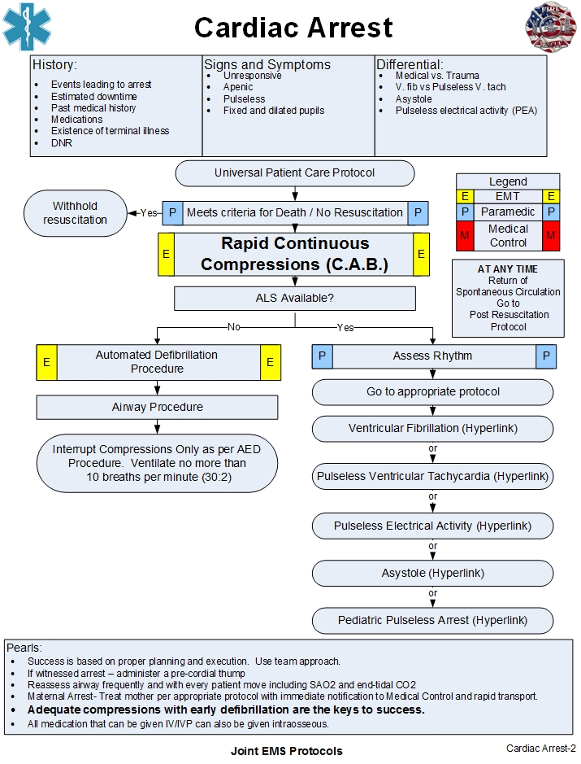
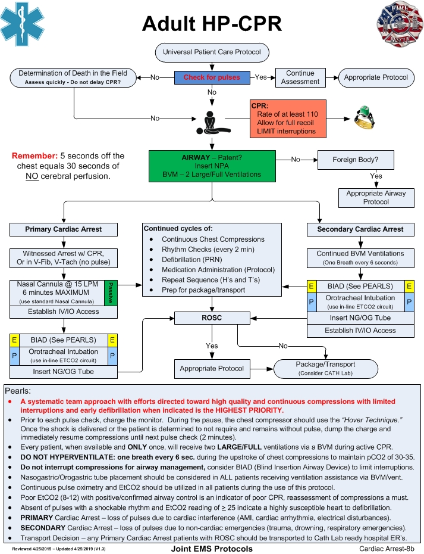
A Modern EMS Database
Steven Blocker, a paramedic himself, was determined to fix this. The goal was to digitize protocols into a searchable, always-up-to-date mobile database — so that any medic, anywhere, could pull up exactly what they need in seconds.
MURU needed to handle medications, equipment, hospital capabilities, and regional protocol variations — all personalized to the user's agency and role.
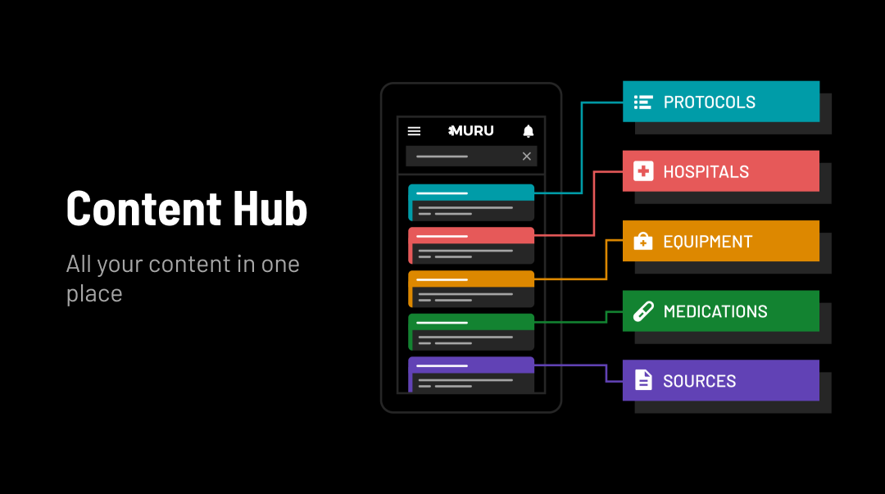
Talking to the People in the Field
We interviewed military and civilian paramedics, EMTs, and hospital staff across the US. We needed to understand not just what information they needed, but how they needed to access it — in high-stress, time-critical situations where every second counts.
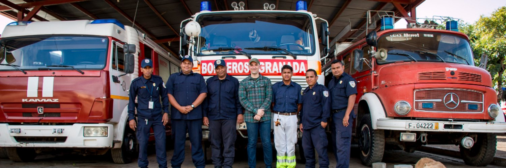
Mapping the Knowledge Hierarchy
Working with Steven and the team, we mapped out the full structure of EMS knowledge — from top-level protocol categories down to individual drug dosing and equipment specs.
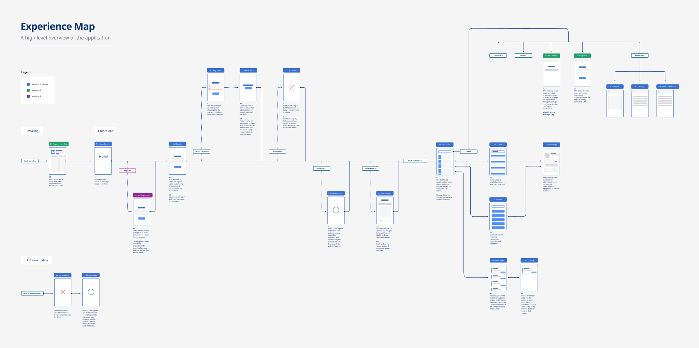
Most Common 911 Calls in NYC
We ran a Jamboard session with Steven to map out the most common emergency scenarios — cardiac arrest, respiratory distress, trauma, stroke — and traced the exact information a medic would need to access at each stage of response.
This helped us prioritize which protocol types needed to surface first, and how the search experience needed to handle lay-terms alongside clinical terminology. A medic should be able to type "chest pain" and get cardiac protocol results instantly.
Sketching the Core Flows
Before visual design, we mapped the key user flows: onboarding and protocol setup, the main search experience, and the detail view for protocols, medications, and equipment.
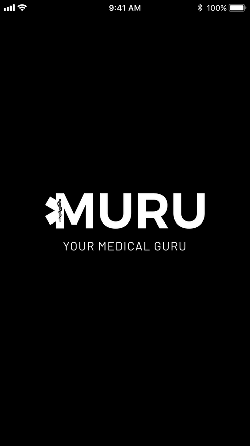
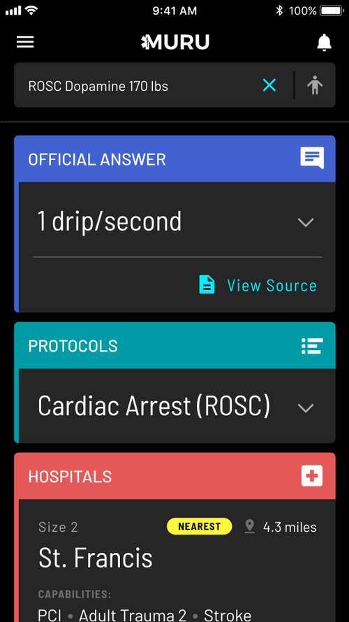
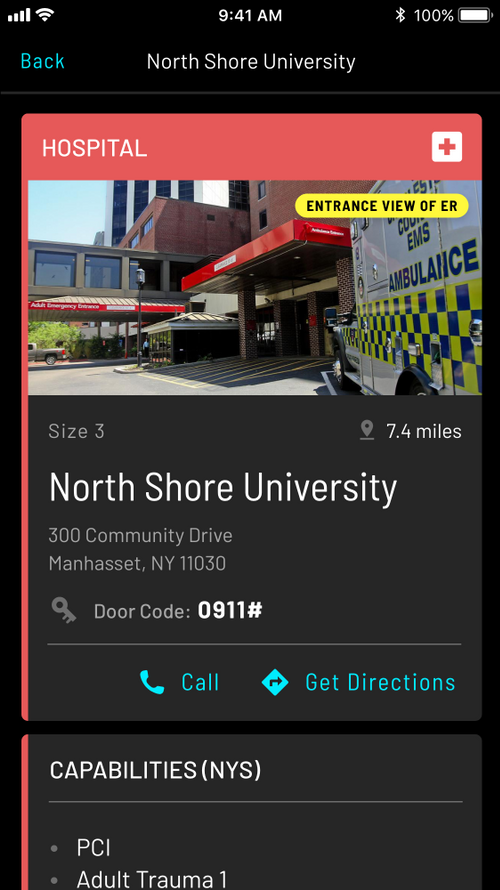
A Day with the EMTs
We spent a full day at an EMT station, putting two prototypes in front of medics mid-shift. We tested two distinct approaches: a card-based browsing experience and a search-first model. The search-first model won convincingly — medics under pressure don't browse, they query.
Prototype A — Browse Model
Prototype B — Search First
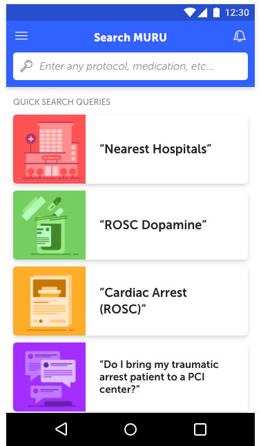
Key insight: Medics relied on lay terms ("blue lips", "chest pain"), not clinical vocabulary. The search engine had to bridge that gap — returning relevant protocol results for both clinical and colloquial queries.
Changing the Tone
Our first brand direction was too playful — bright colors and rounded forms that felt consumer-grade. After testing with medics, the feedback was clear: the app needed to feel serious, authoritative, and trustworthy. A medic's life — and their patient's life — depends on confidence in their tools.
We moved to a dark, high-contrast palette with a focused teal accent. The visual language shifted from "app" to "instrument."
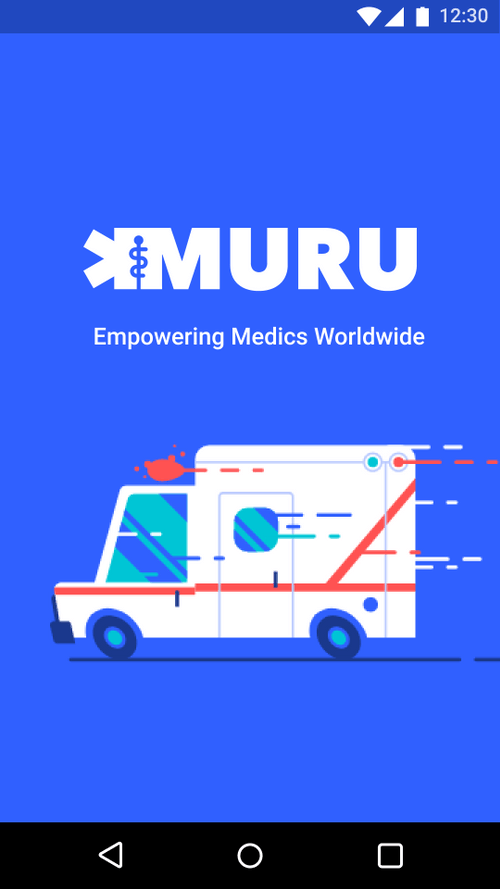
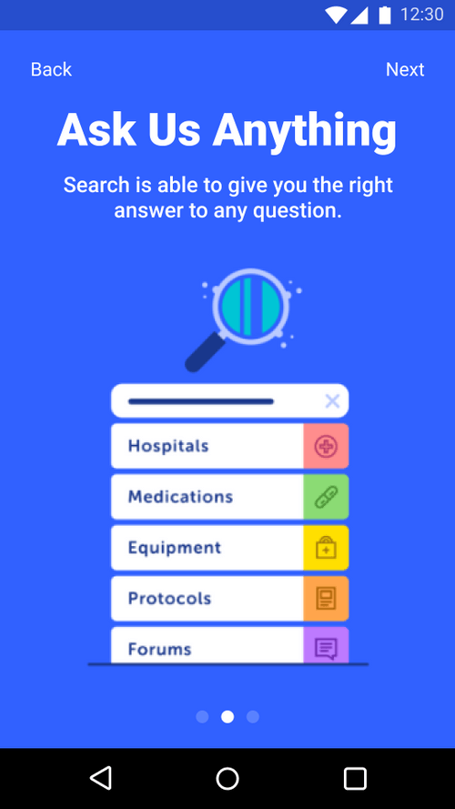
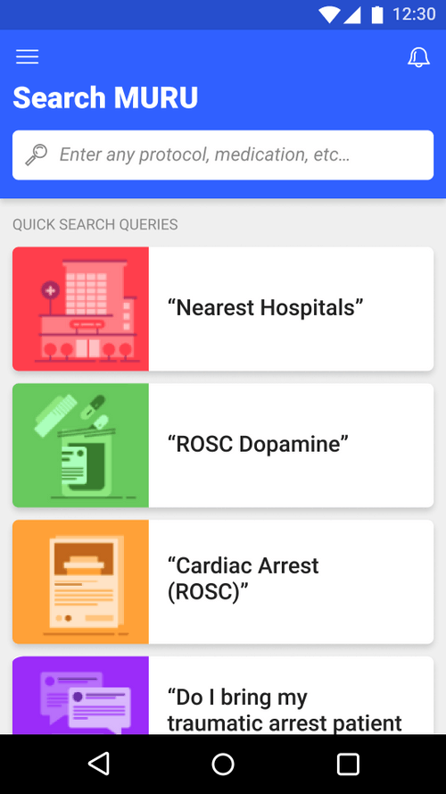
Bringing It All Together
Sign-in, onboarding, protocol search, dosing, and detail views — all optimized for one-handed use under time pressure. Toggle the view below to explore every screen.
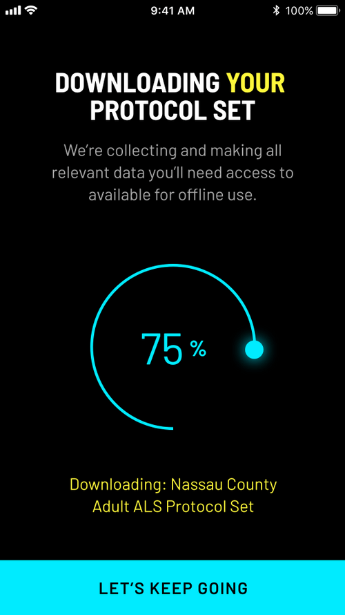
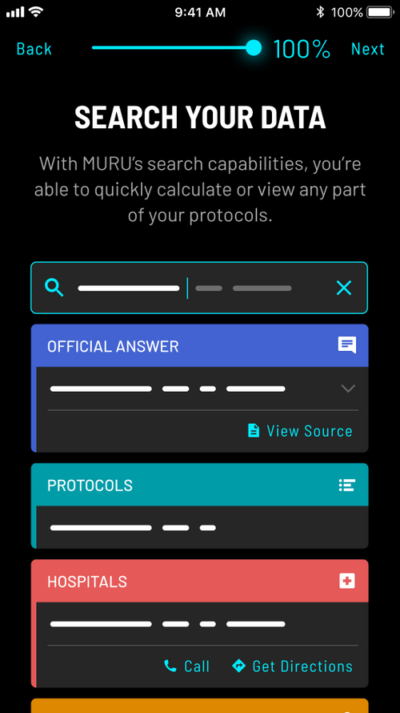
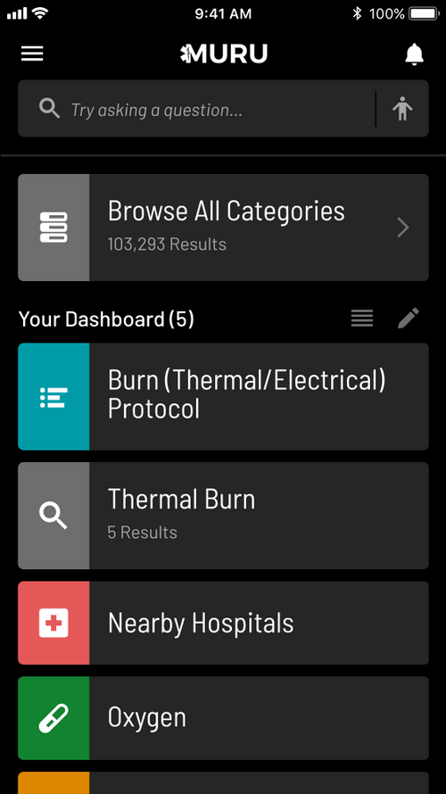
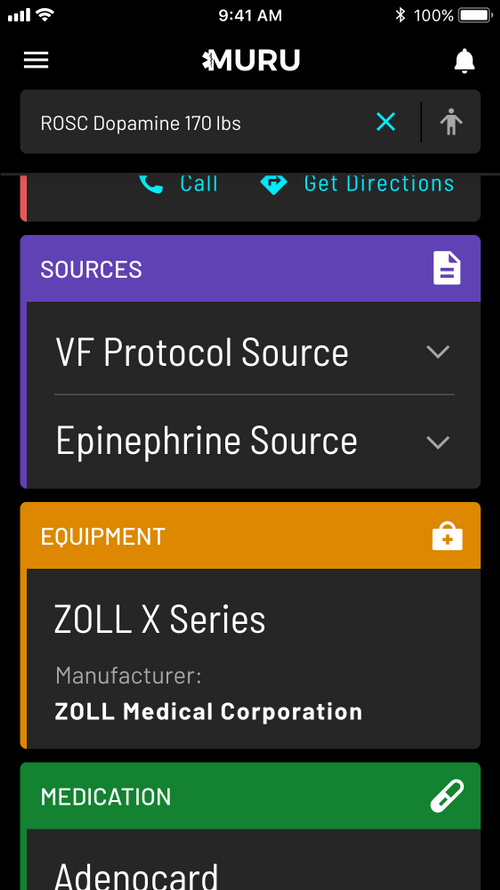
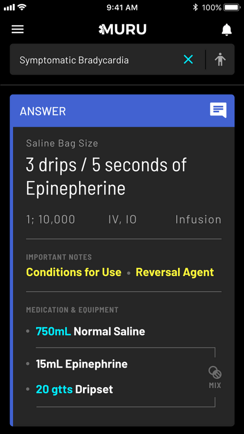
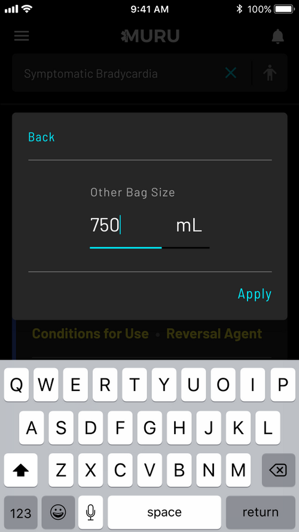
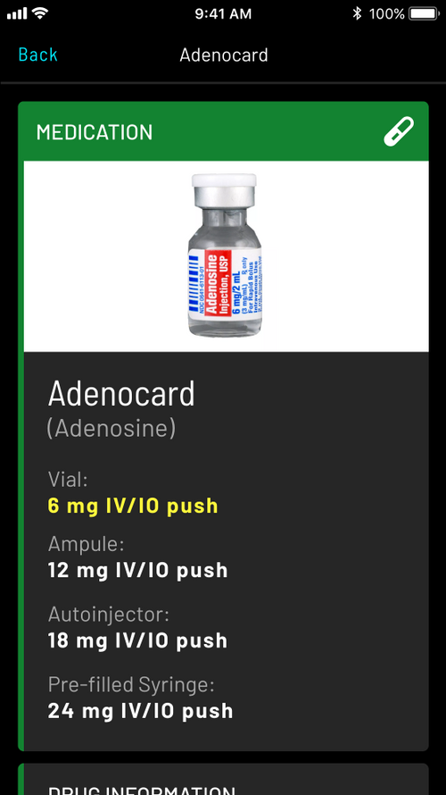
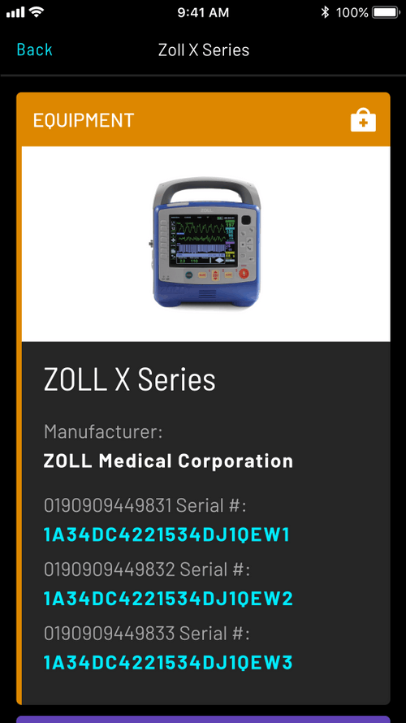
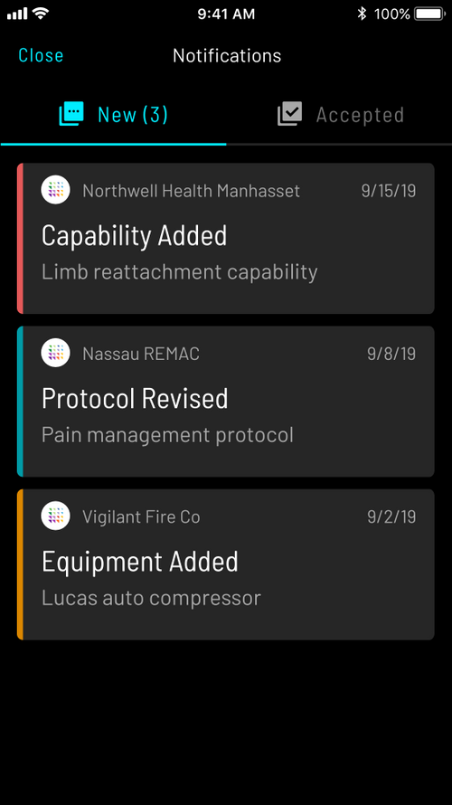
Free for First Responders
When the pandemic hit, MURU made the platform free for all COVID-19 protocols. Within weeks, EMS agencies across the country were using MURU to distribute updated COVID response guidelines in real time — the exact scenario the platform was built for.
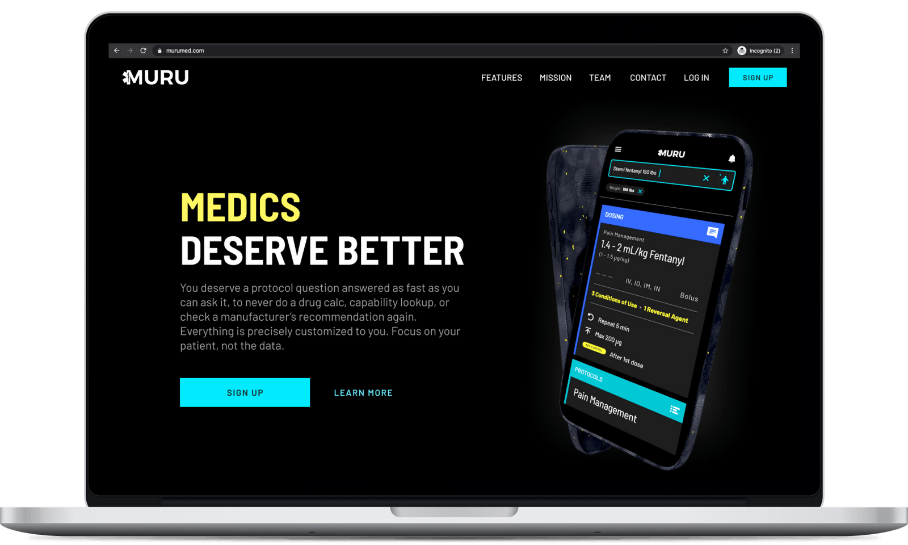
Medics Agreed
The App Store response from working paramedics validated what we heard in testing — MURU felt built for them, not for a general consumer audience.
App Store rating from verified EMS professionals
Official App of New York State EMS
MURU was adopted as the official protocol app for New York State EMS — a meaningful validation that the design was trusted and functional at a system level.
"The entire Clade team did a phenomenal job. I would highly recommend Clade to anyone looking for a great design partner. Thank you for believing in our team, mission and doing your very best work!"